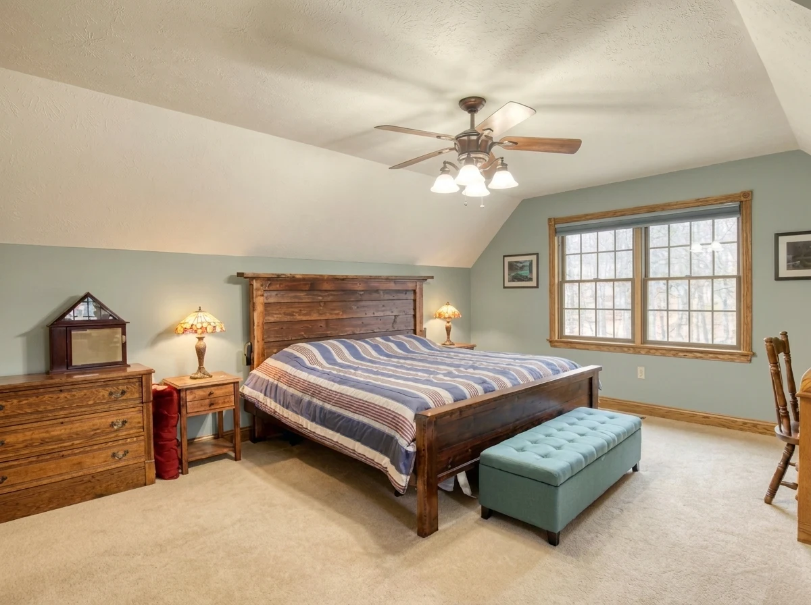
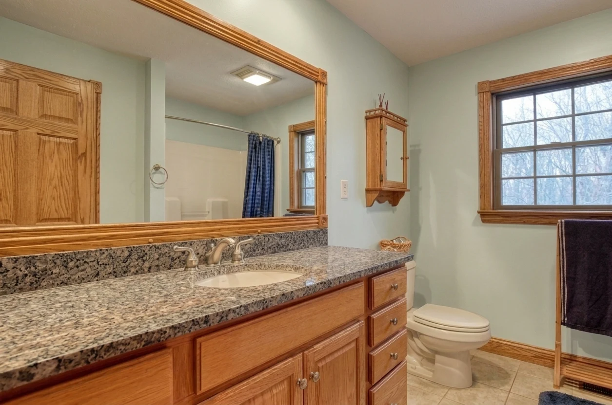
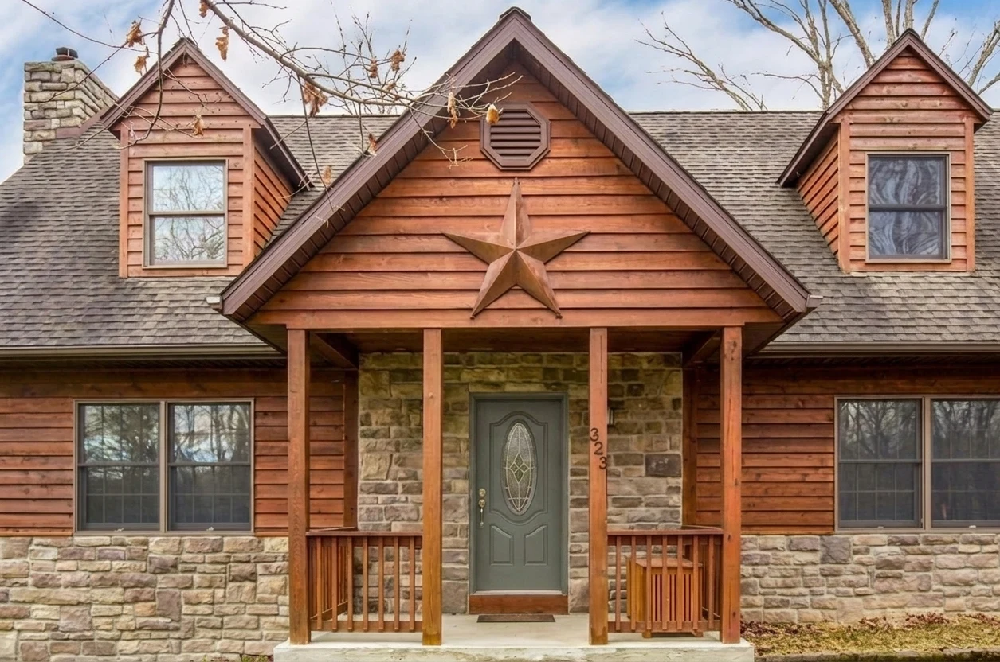

Gallery
From the glass gable to the screened porch, explore the spaces that make this house its own. Prior-listing photographs may show earlier finishes. AI-edited images are labeled; colours and staging are approximate.
Gather around the hearth
A two-story great room, open kitchen and dining area share oak floors and a view into the woods. The loft looks down toward the glass gable and fieldstone chimney.

 Digitally simulated image
Digitally simulated image


Blue, green and quiet corners
Two bedrooms sit on separate floors. The primary suite pairs muted blue with oak trim; the upstairs bedroom has soft green walls and a walk-in closet. Sea Salt gives both full baths a pale green backdrop.
 Digitally simulated image
Digitally simulated image Digitally simulated image
Digitally simulated image
Digitally simulated image
Digitally simulated imageStep out into the woods
Pewter Green doors meet the warm siding. A long screened porch and wrap deck extend the living space; the hot tub at the far end sits beneath an open dark sky.
 Digitally simulated image
Digitally simulated image
Digitally simulated image Digitally simulated image
Digitally simulated image Digitally simulated image
Digitally simulated imageThe house through the seasons
The wooded ridge, stone garden beds and long views beyond the house give each season its own character.


See the rooms in person
Explore the floor plans, or email the realtor to arrange a visit.
Request a showing